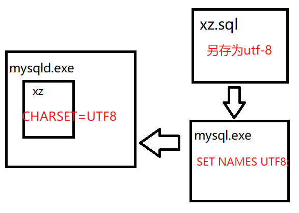

复习
关系型数据库逻辑结构
Server -> Database -> Table ->Row ->Column
mysql
服务器端：开启服务 mysqld.exe
客户端：连接服务器 mysql.exe
连接
mysql.exe -h127.0.0.1 -P3306 -uroot -p
mysql -uroot
常用管理命令
quit/show databases/use 数据库名/show tables/desc 表名
SQL命令
交互模式
脚本模式 mysql -uroot < C:/....
DROP DATABASE IF EXISTS ...;
CREATE DATABASE ...;
USE ...;
CREATE TABLE ...(
列名 列类型,
列名 列类型
);
INSERT INTO 表名 VALUES(...);
SELECT * FROM 表名;
UPDATE 表名 SET 列名='值',列名='值' WHERE ...;
DELETE FROM 表名 WHERE ...;
1.计算机存储字符
(1)如何存储英文字符
ASCII: 总共有128个,对所有的英文字母和符号进行编码
abc 979898
Latin-1: 总共有256，兼容ASCII码，同时对欧洲符号进行了编码，mysql默认使用这种编码。
(2)如何存储中文字符
GB2312: 对常用的6千多汉字进行编码，兼容ASCII码
GBK: 对2万多汉字进行了编码，兼容GB2312
BIG5: 台湾繁体字编码，兼容ASCII码
Unicode: 对世界上主流的国家常用的语言进行了编码，兼容ASCII，不兼容GB2312,GBK,BIG5，具体分为UTF-8，UTF-16，UTF-32存储方案
(3)解决mysql存储中文乱码
使用UTF-8编码形式
sql脚本文件另存为的编码
客户端连接服务器的编码(SET NAMES UTF8)
服务器端创建数据库使用的编码(CHARSET=UTF8)

练习：编写脚本文件01_dang.sql,创建数据库dang，设置编码为utf8；创建保存图书的数据表book，包含bid，title标题，author作者，price价格，publish出版社，pubTime出版时间
插入4条记录，查询结果。
2.mysql中的列类型
创建数据表的时候，指定的列可以存储的数据类型
CREAT TABLE book( bid 列类型 );
(1)数值类型——引号可加可不加
TINYINT 微整型，占1个字节 范围-128~127
SMALLINT 小整型，占2个字节 范围-32768~32767
INT 整型，占4个字节
范围 -2147483648~2147483647
BIGINT 大整型，占8个字节
FLOAT(M,D) 单精度浮点型，占4个字节，范围3.4E38，范围比INT大的多，可能产生计算误差。
DOUBLE(M,D) 双精度浮点型，占8个字节，范围比BIGINT大的多
DECIMAL(M,D) 定点小数，不会产生计算误差，M代表总的有效位数，D代表小数点后的有效位数
BOOL 布尔型，只有两个结果TRUE、FALSE(不能加引号)，真正存储数据的时候，会自动变成1和0；也可以直接使用1和0；数据库的列类型自动变成TINYINT
(2)日期时间类型——必须加引号
DATE 日期型 '2018-12-31'
TIME 时间型 '14:37:30'
DATETIME 日期时间型 '2018-12-31 14:37:30'
(3)字符串类型——必须加引号
VARCHAR(M) 变长字符串，不会产生空间浪费，操作速度相对慢，M的最大值是65535
CHAR(M) 定长字符串，可能产生空间浪费，操作速度快，用于存储手机号码、身份证号等固定长度字符，M最大值是255
TEXT(M) 大型变长字符串，M最多存2G
CHAR(5) VARCHAR(5)
a a\0\0\0\0 a\0
ab ab\0\0\0 ab\0
abc abc\0\0 abc\0
abcde abcde abcde
一二三 一二三\0\0 一二三\0
CREATE TABLE t1(
id INT,
age TINYINT,
commentCount INT,
price DECIMAL(6,2), # 9999.99
phone CHAR(11),
article VARCHAR(3000),
sex BOOL, #1 男 0女
pubTime DATE
);
使用合理的列类型；
练习：编写脚本文件02_xuezi.sql，先丢弃再创建数据库xuezi，使用utf8编码，进入该数据库，创建保存笔记本数据的表laptop，包含lid，title，price，stockCount库存量，shelfTime上架时间，isIndex是否为首页推荐
插入4条记录
练习：编写脚本文件03_tedu.sql，创建数据库tedu，设置编码为utf8，进入该数据库。
创建保存部门数据的表dept，包含did、dname部门名称、empCount部门员工数量，插入以下数据
10 研发部 3， 20 市场部 2， 30 运营部 2
创建保存员工数据的表emp，包含eid、ename、sex、birthday生日、salary工资、deptId所属部门编号
插入若干条记录
课后任务
(1)复习今天内容
(2)练习
编写脚本文件xz.sql，创建数据库xz，设置编码utf；
创建保存笔记本家族分类的表laptop_family( fid, fname 分类名称, laptopCount笔记本数量 )
10 联想 2 20 戴尔 2 30 小米 3
创建笔记本数据表laptop(lid，title，price，spec规格，detail详情，shelfTime上架时间，isOnsale是否在售，familyId 所属分类编号)
插入若干条数据
(3)预习mysql中列约束